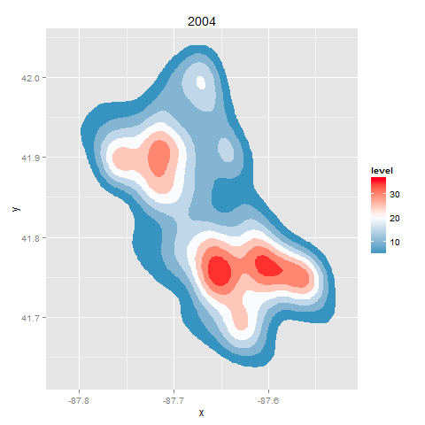

This is data regarding crimes against children in Chicago, graphed as number density over position (latitude/longitude), graphed per year. There are two areas with particularly high levels (red) of reported crimes against children, one in the northern part of the city and one in southern part. The differences between the earliest and latest graphs are not statistically significant to 95% confidence levels; however, if the decline continues or stabilizes at low levels, it will become statistically significant.
Code description: Crimes against children as reported to the CPD, analyzed using R and the ggplot2 and animation packages. Produces ten separate graphs and combines them, once paneled in a 5-by-2 grid and once using sequential animation.